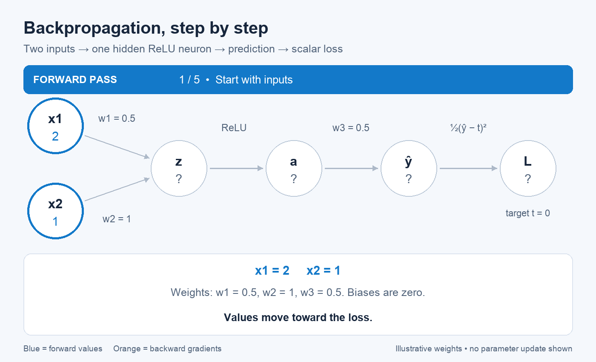
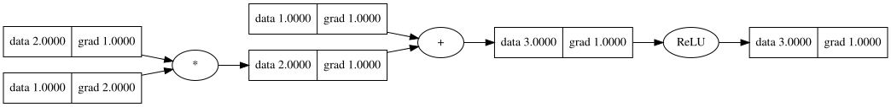
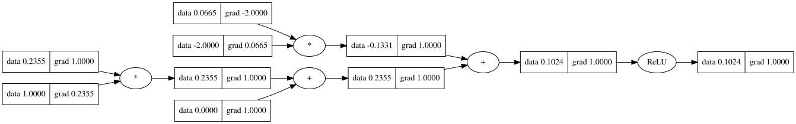
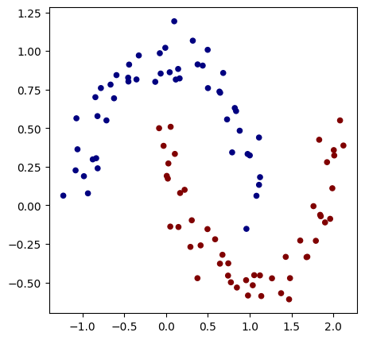
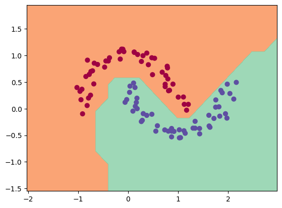

class Value:
def __init__(self, data, label=""):
self.data = data
self.grad = 0.0
self.label = label
self._prev = set()
self._op = ""
Fall 2026
CSC-372 Project Part 6
Neural Network Library

Modern deep learning frameworks such as PyTorch make it remarkably easy to define a neural network, compute a loss, call loss.backward(), and update the model’s parameters.
But what exactly happens when we call backward()?
In this assignment, you will find out by building a small automatic differentiation (autograd) engine from scratch. By the end of the assignment, you will have implemented the essential machinery that allows neural networks to learn.
Your implementation will begin with a simple Value object representing a single scalar number. Unlike an ordinary Python number, however, a Value will remember how it was computed. As you perform arithmetic operations, your program will construct a computational graph connecting values and operations.
You will then implement the derivatives associated with these operations and use the chain rule to propagate gradients backward through the graph. This will allow you to implement your own version of:
loss.backward()
Once your autograd engine is working, you will use it to build the basic components of a neural network—including neurons, layers, and a multilayer perceptron (MLP). Finally, you will train your network using gradient descent.
The goal is not to build a fast or production-ready deep learning framework. Instead, the goal is to understand the relatively small set of ideas underneath frameworks such as PyTorch.
Q1. Building the Value Class
We will begin by creating the fundamental building block of our autograd engine: the Value class.
The Value class will be the principal data structure used throughout this assignment. You can think of it as playing a role similar to:
- a
Tensorin PyTorch, or - a
DataFramein pandas.
Just as most operations in PyTorch operate on and return Tensor objects, the operations in our autograd engine will operate on and return Value objects.
There is one important simplification: while a PyTorch Tensor can contain scalars, vectors, matrices, or higher-dimensional arrays, our Value object will contain only a single scalar number.
However, a Value will store more than just that number. It will also keep track of information that allows us to reconstruct how the value was computed. This will eventually allow us to traverse the computation backward and calculate gradients.
1.1. Define the Value Class
Create a class called Value. Each Value object should store the following information:
data— the scalar numerical value represented by this object.grad— the derivative of the final output with respect to this value. Initialize this to0.0._prev— theValueobjects that were used to produce this value. Store these as aset._op— a string describing the operation that produced this value, such as"+"or"*".label— an optional human-readable name that will make computational graphs easier to inspect.
Your constructor should support creating objects such as:
a = Value(2.0, label="a")
b = Value(-3.0, label="b")At this point, a and b are leaf nodes. They contain values, but they were not produced by performing an operation on other Value objects.
# Test code
a = Value(2.0, label="a")
assert a.data == 2.0
assert a.grad == 0.0
assert a.label == "a"
assert a._prev == set()
assert a._op == ""
b = Value(-3.5)
assert b.data == -3.5
assert b.grad == 0.0
assert b._prev == set()
assert b._op == ""
print("1.1 complete!")Step 1 complete!1.2. Supporting Addition
Next, we want our Value objects to behave like numbers. In particular, we would like to write:
c = a + bTo make the + operator work with Value objects, implement the __add__ method.
The result of a + b should be a new Value object whose data contains:
a.data + b.dataBut storing the numerical result is only half of the job.
The new Value must also remember how it was created. This is where the _prev and _op attributes become important.
For the operation:
c = a + bc should record:
c.data → the result of a.data + b.data
c._prev → {a, b}
c._op → "+"The _prev attribute tells us which Value objects were the inputs to this computation, while _op tells us which operation was applied to those inputs.
Together, these attributes allow us to reconstruct the computational graph:
a ──┐
+ ──> c
b ──┘Notice that we do not need to explicitly create a separate graph object. The graph is constructed automatically as Value objects perform operations on one another.
For example, if we subsequently write:
d = c + athen d should remember that it was created from c and a, while c already remembers that it was created from a and b.
We therefore have enough information stored inside the Value objects themselves to reconstruct the entire chain of computation.
#Expand your class here
class Value:
pass
a = Value(2.0, label="a")
b = Value(3.0, label="b")
c = a + b
assert isinstance(c, Value)
assert c.data == 5.0
assert c._op == "+"
assert c._prev == {a, b}
assert a.data == 2.0
assert b.data == 3.0
assert a._prev == set()
assert b._prev == set()
a = Value(1.0)
b = Value(2.0)
c = Value(4.0)
d = a + b
e = d + c
assert d.data == 3.0
assert d._prev == {a, b}
assert e.data == 7.0
assert e._prev == {d, c}
print("Step 2 passed!")1.3. Supporting Multiplication
Implement the same behavior for multiplication by defining __mul__.
For example:
d = a * bshould create a new Value whose numerical value is:
a.data * b.dataand which records:
d._prev → {a, b}
d._op → "*"Again, performing the operation should both compute a value and add a new node to the computational graph.
# Test code
a = Value(2.0, label="a")
b = Value(-3.0, label="b")
c = a * b
assert isinstance(c, Value)
assert c.data == -6.0
assert c._op == "*"
assert c._prev == {a, b}
a = Value(2.0, label="a")
b = Value(-3.0, label="b")
c = Value(10.0, label="c")
e = a * b
d = e + c
assert e.data == -6.0
assert e._op == "*"
assert e._prev == {a, b}
assert d.data == 4.0
assert d._op == "+"
assert d._prev == {e, c}
print("Step 3 passed!")1.4. Inspecting Values
Implement __repr__ so that printing a Value gives useful information.
For example:
a = Value(2.0)
print(a)might produce:
Value(data=2.0)The exact formatting is up to you, but it should make debugging your autograd engine easier.
# Test
Value(data=2.0)
representation = repr(a)
assert isinstance(representation, str)
assert "2.0" in representation
print("Step 4 passed!")1.5. Test Your Implementation
Once you have implemented the class, the following code should work:
a = Value(2.0, label="a")
b = Value(-3.0, label="b")
c = Value(10.0, label="c")
e = a * b
d = e + cInspect the values of:
e.data
e._prev
e._op
d.data
d._prev
d._opFrom this information, you should be able to reconstruct the computation:
a ──┐
* ──> e ──┐
b ──┘ + ──> d
c ──┘At this stage, do not implement backpropagation or calculate any derivatives. Your goal is simply to make every computation produce a Value that stores its numerical result and remembers how that result was produced.
a = Value(2.0, label="a")
b = Value(-3.0, label="b")
c = Value(10.0, label="c")
f = Value(-2.0, label="f")
e = a * b
d = e + c
L = d * f
assert e.data == -6.0
assert d.data == 4.0
assert L.data == -8.0
assert e._prev == {a, b}
assert d._prev == {e, c}
assert L._prev == {d, f}
assert e._op == "*"
assert d._op == "+"
assert L._op == "*"
print("All Value class tests passed!")Q2. Teaching Operations How to Differentiate
In 1, our Value objects learned how to remember the computation that produced them. We can now build a computational graph such as:
a ──┐
* ──> e ──┐
b ──┘ + ──> d
c ──┘However, our Value class does not yet know how to compute gradients.
Our next goal is to teach each operation how to propagate a gradient backward to its inputs.
Step 1: Add a _backward Function
Every Value should have a _backward function.
When a Value is first created, _backward should be a function that does nothing.
For example, a leaf node such as:
a = Value(2.0)was not produced by an operation, so there is nothing before a to propagate a gradient to.
Add a _backward function to your Value class that initially does nothing.
a = Value(2.0)
assert callable(a._backward)
# Calling it should not produce an error.
a._backward()
print("Step 1 passed!")2.1. Backpropagating Through Addition
Consider:
a = Value(2.0)
b = Value(3.0)
c = a + bMathematically,
\[c = a + b\]
so the local derivatives are:
\[\frac{\partial c}{\partial a}=1\]
and
\[\frac{\partial c}{\partial b}=1\]
Suppose that during backpropagation we already know c.grad, which represents:
\[\frac{\partial L}{\partial c}\]
where \(L\) is the final output or loss.
Using the chain rule:
\[ \frac{\partial L}{\partial a} = \frac{\partial L}{\partial c} \frac{\partial c}{\partial a} \]
and similarly for \(b\).
Modify __add__ so that the Value it creates has a _backward function capable of propagating out.grad to the inputs of the addition.
Remember that gradients should be accumulated, rather than overwritten.
a = Value(2.0)
b = Value(3.0)
c = a + b
c.grad = 4.0 # manually / artificially setting gradient
c._backward()
assert a.grad == 4.0
assert b.grad == 4.0
print("Addition backward test passed!")Why 4.0?
Because:
\[ \frac{\partial L}{\partial a} = \underbrace{\frac{\partial L}{\partial c}}_{4} \underbrace{\frac{\partial c}{\partial a}}_{1} =4 \]
2.2. Backpropagating Through Multiplication
Now consider:
a = Value(2.0)
b = Value(3.0)
c = a * bMathematically,
\[c=ab\]
The local derivatives are:
\[\frac{\partial c}{\partial a}=b\]
and
\[\frac{\partial c}{\partial b}=a\]
Modify __mul__ so that its output has a _backward function that propagates the output gradient to both inputs.
Again, use the chain rule and remember to accumulate gradients.
a = Value(2.0)
b = Value(3.0)
c = a * b
c.grad = 4.0
c._backward()
assert a.grad == 12.0
assert b.grad == 8.0
print("Multiplication backward test passed!")The expected gradients are:
\[\frac{\partial L}{\partial a}=4(3)=12\]
and
\[\frac{\partial L}{\partial b}=4(2)=8\]
2.3. Why Gradients Must Accumulate
A value may influence the final output through more than one path.
Consider:
a = Value(3.0)
b = a + aBecause \(b=2a\),
\[\frac{\partial b}{\partial a}=2\]
Your implementation should therefore accumulate both contributions to a.grad.
a = Value(3.0)
b = a + a
b.grad = 1.0
b._backward()
assert a.grad == 2.0
print("Gradient accumulation test passed!")If this test fails, check whether your _backward functions are adding to gradients or replacing them.
At this point, individual operations know how to propagate gradients backward.
a = Value(2.0)
b = Value(3.0)
c = a * b
d = c + a
# d = ab + a
d.grad = 1.0
# Manually walk backward through the graph
d._backward()
c._backward()
assert d.grad == 1.0
assert c.grad == 1.0
assert a.grad == 4.0
assert b.grad == 2.0
print("Part 2 passed!")Here,
\[d = ab + a\]
so:
\[ \frac{\partial d}{\partial a} = b+1 = 4 \]
and
\[ \frac{\partial d}{\partial b} = a = 2 \]
Notice something important: we still had to decide ourselves that d._backward() should be called before c._backward().
Our individual operations know how to differentiate themselves, but our autograd engine does not yet know how to automatically traverse an entire computational graph.
That is the problem we will solve next.
Q3. Implementing backward()
In Part 2, each operation learned how to propagate gradients to its immediate inputs.
However, we still had to manually call:
d._backward()
c._backward()For a neural network containing thousands or millions of operations, manually determining the correct order would obviously be impossible.
Our goal is now to implement:
d.backward()and have our autograd engine automatically propagate gradients through the entire computational graph.
Why Does Order Matter?
Consider:
a ──┐
* ──> c ──┐
b ──┘ + ──> d
a ──┘Before we can propagate the gradient from c to a and b, we first need to know the gradient of c.
Therefore, backpropagation must process nodes in an order such that a node receives all of its gradient contributions before its _backward() function is called.
We need a way to order the nodes in our computational graph.
3.1. Topological Ordering
A topological ordering of a computational graph places every node after the nodes that it depends on.
For example, for:
a = Value(2.0)
b = Value(3.0)
c = a * b
d = c + aone valid topological ordering is:
a, b, c, dbecause c depends on a and b, and d depends on c and a.
Write code that starts from the final output and recursively visits its _prev values to construct a topological ordering of the graph.
Be careful: a node may be reachable through multiple paths. Each Value should appear in the ordering exactly once.
a = Value(2.0, label="a")
b = Value(3.0, label="b")
c = a * b
c.label = "c"
d = c + a
d.label = "d"
topo = d._topological()
# your topological ordering should contain exactly four nodes:
assert len(topo) == 4
assert set(topo) == {a, b, c, d}
assert topo.index(a) < topo.index(c)
assert topo.index(b) < topo.index(c)
assert topo.index(c) < topo.index(d)
print("Topological ordering test passed!")3.2. Traverse the Graph Backward
The topological ordering gives us the order of the forward dependencies:
inputs → intermediate values → outputBackpropagation needs to travel in the opposite direction:
output → intermediate values → inputsTherefore, once you have constructed your topological ordering, traverse it in reverse order and call each node’s _backward() function.
Before beginning this traversal, set the gradient of the final output to:
self.grad = 1.0Why?
If the final output is \(L\), then:
\[\frac{\partial L}{\partial L}=1\]
This provides the starting point for backpropagation.
Put all of this logic inside a new method:
Value.backward()
You should now be able to write:
a = Value(2.0)
b = Value(3.0)
c = a * b
d = c + a
d.backward()without manually calling _backward() on any intermediate values.
Recall that:
\[d=ab+a\]
Therefore:
\[\frac{\partial d}{\partial a}=b+1\]
and
\[\frac{\partial d}{\partial b}=a\]
a = Value(2.0)
b = Value(3.0)
c = a * b
d = c + a
d.backward()
assert d.grad == 1.0
assert c.grad == 1.0
assert a.grad == 4.0
assert b.grad == 2.0
print("Basic backward() test passed!")Test a Deeper Graph
Let’s make the computational graph slightly larger:
a = Value(2.0)
b = Value(-3.0)
c = Value(10.0)
f = Value(-2.0)
e = a * b
d = e + c
L = d * f
L.backward()The forward computation is:
a ──┐
* ──> e ──┐
b ──┘ + ──> d ──┐
c ──┘ * ──> L
f ──┘Here:
\[e=ab\]
\[d=e+c\]
and
\[L=df\]
assert L.data == -8.0
assert L.grad == 1.0
assert d.grad == -2.0
assert f.grad == 4.0
assert e.grad == -2.0
assert c.grad == -2.0
assert a.grad == 6.0
assert b.grad == -4.0
print("Deep computational graph test passed!")Final Challenge
Test whether your implementation correctly handles a value that contributes to the output through multiple paths:
Before running the test, calculate the derivative by hand.
The computation is:
\[d=(a^2+a)a\]
which can also be written as:
\[d=a^3+a^2\]
Therefore:
\[\frac{\partial d}{\partial a}=3a^2+2a\]
At \(a=3\):
\[ \frac{\partial d}{\partial a} = 3(3^2)+2(3) = 33 \]
a = Value(3.0)
b = a * a
c = b + a
d = c * a
d.backward()
assert d.data == 36.0
assert a.grad == 33.0
print("Gradient accumulation through multiple paths passed!")Gradient accumulation through multiple paths passed!If this test passes, your autograd engine can now:
- construct a computational graph during the forward pass,
- store local derivative rules for individual operations,
- determine the dependencies between computations,
- traverse those computations in the correct order, and
- automatically calculate gradients using reverse-mode automatic differentiation.
In other words, you have implemented your own small version of:
loss.backward()in PyTorch.
class Value:
""" stores a single scalar value and its gradient """
def __init__(self, data, _children=(), _op=''):
self.data = data
self.grad = 0
# internal variables used for autograd graph construction
self._backward = lambda: None
self._prev = set(_children)
self._op = _op # the op that produced this node, for graphviz / debugging / etc
def __add__(self, other):
other = other if isinstance(other, Value) else Value(other)
out = Value(self.data + other.data, (self, other), '+')
def _backward():
self.grad += out.grad
other.grad += out.grad
out._backward = _backward
return out
def __mul__(self, other):
other = other if isinstance(other, Value) else Value(other)
out = Value(self.data * other.data, (self, other), '*')
def _backward():
self.grad += other.data * out.grad
other.grad += self.data * out.grad
out._backward = _backward
return out
def __pow__(self, other):
assert isinstance(other, (int, float)), "only supporting int/float powers for now"
out = Value(self.data**other, (self,), f'**{other}')
def _backward():
self.grad += (other * self.data**(other-1)) * out.grad
out._backward = _backward
return out
def relu(self):
out = Value(0 if self.data < 0 else self.data, (self,), 'ReLU')
def _backward():
self.grad += (out.data > 0) * out.grad
out._backward = _backward
return out
def backward(self):
# topological order all of the children in the graph
topo = []
visited = set()
def build_topo(v):
if v not in visited:
visited.add(v)
for child in v._prev:
build_topo(child)
topo.append(v)
build_topo(self)
# go one variable at a time and apply the chain rule to get its gradient
self.grad = 1
for v in reversed(topo):
v._backward()
def __neg__(self): # -self
return self * -1
def __radd__(self, other): # other + self
return self + other
def __sub__(self, other): # self - other
return self + (-other)
def __rsub__(self, other): # other - self
return other + (-self)
def __rmul__(self, other): # other * self
return self * other
def __truediv__(self, other): # self / other
return self * other**-1
def __rtruediv__(self, other): # other / self
return other * self**-1
def __repr__(self):
return f"Value(data={self.data}, grad={self.grad})"Part 4: Completing the Value API
Our autograd engine currently supports addition and multiplication. In principle, we could express many computations using only these operations, but building neural networks would quickly become cumbersome.
Before moving on, let’s make our Value objects behave more like ordinary Python numbers and PyTorch tensors.
We will add support for:
- exponentiation
- negation
- subtraction
- division
- operations with ordinary Python numbers
- a nonlinear activation function
For every new operation, remember the two responsibilities of our autograd engine:
- Forward pass: calculate the numerical result and record how it was produced.
- Backward pass: define how the gradient should propagate to the operation’s inputs.
4.1. Exponentiation
Implement __pow__ so that a Value can be raised to a numerical power.
For example:
a = Value(3.0)
b = a ** 2should calculate:
\[b=a^2\]
The local derivative is:
\[ \frac{\partial b}{\partial a} = 2a \]
More generally, if:
\[b=a^n\]
then:
\[ \frac{\partial b}{\partial a} = na^{n-1} \]
Your implementation only needs to support powers that are ordinary Python int or float values.
a = Value(3.0)
b = a ** 2
b.backward()
assert b.data == 9.0
assert a.grad == 6.0
# Try another power:
a = Value(2.0)
b = a ** 3
b.backward()
assert b.data == 8.0
assert a.grad == 12.0
print("Exponentiation test passed!")4.2. Negation
Next, implement unary negation:
b = -aMathematically:
\[b=-a\]
You do not necessarily need to create an entirely new primitive operation for negation.
Ask yourself:
Can \(-a\) be expressed using an operation our
Valueclass already supports?
Implement __neg__ using your existing operations.
a = Value(3.0)
b = -a
assert isinstance(b, Value)
assert b.data == -3.0
b.backward()
assert a.grad == -1.0
print("Negation test passed!")4.3. Subtraction
Once negation works, implement subtraction:
c = a - bAgain, you do not need to implement subtraction as an entirely new primitive operation.
Think about how:
\[a-b\]
can be rewritten using addition and negation.
a = Value(5.0)
b = Value(2.0)
c = a - b
assert c.data == 3.0
c.backward()
assert a.grad == 1.0
assert b.grad == -1.0
print("Subtraction test passed!")4.4. Division
Next, implement:
c = a / bRather than treating division as a completely new operation, recall that:
\[ \frac{a}{b} = ab^{-1} \]
Use the operations you have already implemented to define division.
a = Value(6.0)
b = Value(2.0)
c = a / b
assert c.data == 3.0
c.backward()
assert abs(a.grad - 0.5) < 1e-10
assert abs(b.grad - (-1.5)) < 1e-10
print("Division test passed!")4.5. Working with Python Numbers
So far, expressions involving two Value objects should work:
a + b
a * bHowever, we also want natural expressions such as:
a + 2
2 + a
a * 3
3 * a
a - 1
2 - a
a / 2These are particularly important when implementing neural networks because constants appear frequently in mathematical expressions.
Modify your arithmetic methods so that ordinary Python numbers are automatically converted into Value objects when necessary.
You may also need to implement Python’s corresponding reverse operators, such as:
__radd__
__rmul__
__rsub__
__rtruediv__a = Value(4.0)
assert (a + 2).data == 6.0
assert (2 + a).data == 6.0
assert (a * 3).data == 12.0
assert (3 * a).data == 12.0
assert (a - 1).data == 3.0
assert (10 - a).data == 6.0
assert (a / 2).data == 2.0
assert (8 / a).data == 2.0
print("Python number interoperability tests passed!")4.6. Add a Nonlinear Activation Function
A neural network consisting entirely of linear operations is still just a linear model, regardless of how many layers we stack together.
To build more expressive neural networks, we need nonlinear activation functions.
Implement the hyperbolic tangent activation function:
a.tanh()The forward computation is:
\[ t = \tanh(a) \]
You may calculate the forward value using Python’s math.tanh.
The derivative of \(\tanh\) is:
\[ \frac{dt}{da} = 1-t^2 \]
Notice that once you have computed the output \(t\), the local derivative can be calculated directly from that output.
a = Value(0.5)
t = a.tanh()
assert abs(t.data - 0.4621171573) < 1e-6
t.backward()
expected_grad = 1 - t.data**2
assert abs(a.grad - expected_grad) < 1e-6
print("tanh test passed!")
# Also verify an especially simple case:
a = Value(0.0)
t = a.tanh()
t.backward()
assert t.data == 0.0
assert a.grad == 1.0
print("tanh zero test passed!")Final Checkpoint
Your Value class should now support relatively natural mathematical expressions.
Try:
a = Value(2.0)
b = Value(3.0)
c = ((a * b + 2) / 4) ** 2
c.backward()Verify the forward calculation:
\[ c = \left(\frac{ab+2}{4}\right)^2 \]
For \(a=2\) and \(b=3\):
\[ c = \left(\frac{8}{4}\right)^2 = 4 \]
Checkpoint
assert c.data == 4.0
assert abs(a.grad - 3.0) < 1e-10
assert abs(b.grad - 2.0) < 1e-10
print("All Value API tests passed!")Your Value class now behaves much more like the numerical objects provided by a deep learning framework.
You are ready to use it to build neural networks.
2. Trace Graph
Uses graphviz to render the computation graph of any Value:
draw_dot() traces _prev links and draws each node as a box showing data and grad, with operator nodes in between.
Great for seeing the forward/backward graph on a tiny expression or a single 2-input neuron.
from graphviz import Digraph
def trace(root):
nodes, edges = set(), set()
def build(v):
if v not in nodes:
nodes.add(v)
for child in v._prev:
edges.add((child, v))
build(child)
build(root)
return nodes, edges
def draw_dot(root, format='svg', rankdir='LR'):
"""
format: png | svg | ...
rankdir: TB (top to bottom graph) | LR (left to right)
"""
assert rankdir in ['LR', 'TB']
nodes, edges = trace(root)
dot = Digraph(format=format, graph_attr={'rankdir': rankdir}) #, node_attr={'rankdir': 'TB'})
for n in nodes:
dot.node(name=str(id(n)), label = "{ data %.4f | grad %.4f }" % (n.data, n.grad), shape='record')
if n._op:
dot.node(name=str(id(n)) + n._op, label=n._op)
dot.edge(str(id(n)) + n._op, str(id(n)))
for n1, n2 in edges:
dot.edge(str(id(n1)), str(id(n2)) + n2._op)
return dot# a very simple example
x = Value(1.0)
y = (x * 2 + 1).relu()
y.backward()
draw_dot(y)
# a simple 2D neuron
import random
# from micrograd import nn
random.seed(1337)
# n = nn.Neuron(2)
n = Neuron(2)
x = [Value(1.0), Value(-2.0)]
y = n(x)
y.backward()
dot = draw_dot(y)
dot
Q4: Building a Neural Network Library
We now have the most important piece of our deep learning framework: an automatic differentiation engine.
Our Value class can construct computational graphs and automatically calculate gradients using:
loss.backward()But calculating gradients is only part of building a neural network. We also need a convenient way to organize the many parameters and computations that make up a model.
In this part, you will build a small neural network library on top of your autograd engine.
Just as our Value class is a simplified counterpart of PyTorch’s Tensor, the classes we build in this section will be simplified counterparts of classes in PyTorch’s torch.nn library.
By the end, you should be able to construct a multilayer perceptron using:
model = MLP(3, [4, 4, 1])and retrieve all of its trainable parameters using:
model.parameters()4.1. The Module Class
In PyTorch, neural network components inherit from nn.Module.
We will follow a similar design.
Create a base class called:
class Module:
...For now, Module needs to provide two important pieces of functionality.
parameters()
Implement a parameters() method that returns a list containing all trainable Value objects belonging to the module.
The base Module itself has no parameters, so its implementation can simply return an empty list.
zero_grad()
Recall that our autograd engine accumulates gradients. Before performing a new backward pass during training, we therefore need to reset the gradients of all model parameters.
Implement:
zero_grad()which should iterate through self.parameters() and set the gradient of every parameter to 0.0.
m = Module()
assert m.parameters() == []
m.zero_grad() # should run without error
print("Module test passed!")4.2. Build a Neuron
A neuron is the fundamental computational unit of a neural network.
Suppose a neuron receives \(n\) input features:
\[x_1,x_2,\ldots,x_n\]
The neuron has one weight corresponding to each input:
\[w_1,w_2,\ldots,w_n\]
and a bias:
\[b\]
It first computes:
\[ z = \sum_{i=1}^{n} w_i x_i + b \]
or equivalently:
\[ z = w_1x_1+w_2x_2+\cdots+w_nx_n+b \]
The values \(w_i\) and \(b\) are the trainable parameters of the neuron.
Create a class called:
class Neuron(Module):
...Constructor
The constructor should accept:
Neuron(nin)where nin represents the number of inputs to the neuron.
For example:
n = Neuron(3)should create a neuron containing:
- 3 weights
- 1 bias
Each weight and bias must be a Value object so that our autograd engine can calculate gradients with respect to them.
Initialize the weights to small random values. The bias may initially be set to zero.
Store the weights in a list called w and the bias in b.
n = Neuron(3)
assert len(n.w) == 3
assert all(isinstance(w, Value) for w in n.w)
assert isinstance(n.b, Value)
print("Neuron initialization test passed!")4.3. Implement the Neuron’s Forward Pass
Next, make a Neuron callable by implementing:
__call__()The method should accept a list of inputs:
x = [x1, x2, ..., xn]and calculate:
\[ z = \sum_{i=1}^{n} w_i x_i + b \]
Because the weights, bias, and intermediate computations are Value objects, performing this calculation should automatically construct a computational graph.
For now, return \(z\) directly. We will add nonlinear activation functions separately.
For example:
n = Neuron(3)
x = [
Value(2.0),
Value(-1.0),
Value(3.0)
]
out = n(x)should produce a single Value.
n = Neuron(3)
n.w = [
Value(1.0),
Value(2.0),
Value(-1.0)
]
n.b = Value(3.0)
x = [
Value(2.0),
Value(-1.0),
Value(4.0)
]
out = n(x)
assert isinstance(out, Value)
assert out.data == -1.0
print("Neuron forward pass test passed!")The expected calculation is:
\[ z=(1)(2)+(2)(-1)+(-1)(4)+3=-1 \]
4.4. Return the Neuron’s Parameters
Implement the parameters() method for Neuron.
A neuron’s trainable parameters consist of all of its weights and its bias:
\[ w_1,w_2,\ldots,w_n,b \]
Therefore, a neuron with nin inputs should have:
\[nin+1\]
trainable parameters.
n = Neuron(3)
params = n.parameters()
assert len(params) == 4
assert all(isinstance(p, Value) for p in params)
print("Neuron parameters test passed!")
# You should now also be able to use the
# `zero_grad()` method inherited from `Module`:
for p in n.parameters():
p.grad = 5.0
n.zero_grad()
assert all(p.grad == 0.0 for p in n.parameters())
print("Neuron zero_grad test passed!")4.5. Build a Layer
A neural network layer consists of multiple neurons receiving the same inputs.
Create:
class Layer(Module):
...The constructor should accept:
Layer(nin, nout)where:
nin= number of inputs to each neuronnout= number of neurons in the layer
For example:
layer = Layer(3, 4)represents:
3 inputs → 4 neurons → 4 outputsCreate nout separate Neuron objects and store them in a list.
layer = Layer(3, 4)
assert len(layer.neurons) == 4
assert all(isinstance(n, Neuron) for n in layer.neurons)
for neuron in layer.neurons:
assert len(neuron.w) == 3
print("Layer initialization test passed!")4.6. Implement the Layer’s Forward Pass
Implement Layer.__call__().
Every neuron in the layer should receive the same input vector.
If:
x = [x1, x2, x3]then conceptually:
┌── Neuron 1 ──> output 1
│
[x1, x2, x3] ────├── Neuron 2 ──> output 2
│
├── Neuron 3 ──> output 3
│
└── Neuron 4 ──> output 4The layer should return the outputs produced by its neurons.
Therefore, a layer containing nout neurons should normally produce nout outputs.
layer = Layer(3, 4)
x = [
Value(1.0),
Value(2.0),
Value(3.0)
]
out = layer(x)
assert len(out) == 4
assert all(isinstance(v, Value) for v in out)
print("Layer forward pass test passed!")4.7. Return All Parameters of a Layer
A layer’s parameters consist of the parameters belonging to all of its neurons.
Implement:
Layer.parameters()so that it returns a single list containing every trainable parameter in the layer.
How many parameters should a Layer(3, 4) contain?
Each neuron has:
\[3+1=4\]
parameters.
There are 4 neurons, so:
\[4(4)=16\]
total trainable parameters.
layer = Layer(3, 4)
params = layer.parameters()
assert len(params) == 16
assert all(isinstance(p, Value) for p in params)
print("Layer parameters test passed!")4.8. Build a Multilayer Perceptron
We can now combine multiple layers to create a Multilayer Perceptron (MLP).
Create:
class MLP(Module):
...The constructor should accept:
MLP(nin, nouts)where:
ninis the number of input featuresnoutsis a list describing the number of neurons in each layer
For example:
model = MLP(3, [4, 4, 1])represents the architecture:
Input Layer 1 Layer 2 Layer 3
3 ───> 4 ───> 4 ───> 1In other words:
3 input features
↓
4 neurons
↓
4 neurons
↓
1 neuronConstruct the appropriate Layer objects and store them inside the MLP.
Be careful about the dimensions. The output size of one layer becomes the input size of the next layer.
model = MLP(3, [4, 4, 1])
assert len(model.layers) == 3
assert len(model.layers[0].neurons) == 4
assert len(model.layers[1].neurons) == 4
assert len(model.layers[2].neurons) == 1
assert len(model.layers[0].neurons[0].w) == 3
assert len(model.layers[1].neurons[0].w) == 4
assert len(model.layers[2].neurons[0].w) == 4
print("MLP architecture test passed!")4.9. Implement the MLP Forward Pass
Implement MLP.__call__().
The input should first be passed through the first layer. The output of that layer should then become the input to the second layer, and so on.
Conceptually:
x → Layer 1 → Layer 2 → ... → Layer N → outputFor:
model = MLP(3, [4, 4, 1])the shapes should progress as:
3 → 4 → 4 → 1model = MLP(3, [4, 4, 1])
x = [
Value(2.0),
Value(3.0),
Value(-1.0)
]
out = model(x)
assert isinstance(out, Value)
print("MLP forward pass test passed!")4.10. Return All Parameters of the MLP
Finally, implement:
MLP.parameters()It should return all parameters from all layers as a single list.
For:
model = MLP(3, [4, 4, 1])we can calculate the expected number of parameters.
The first layer has:
\[4(3+1)=16\]
The second layer has:
\[4(4+1)=20\]
The final layer has:
\[1(4+1)=5\]
Therefore, the entire network has:
\[16+20+5=41\]
trainable parameters.
model = MLP(3, [4, 4, 1])
params = model.parameters()
assert len(params) == 41
assert all(isinstance(p, Value) for p in params)
print("MLP parameters test passed!")4.11. Final Checkpoint: Connect the Neural Network to Autograd
The neural network library you just created should work directly with the autograd engine from Parts 1–3.
model = MLP(3, [4, 4, 1])
x = [
Value(2.0),
Value(3.0),
Value(-1.0)
]
prediction = model(x)
target = Value(1.0)
loss = (prediction - target) ** 2
model.zero_grad()
loss.backward()
# After calling `backward()`, every parameter in the
# network should have a gradient.
assert len(model.parameters()) == 41
for p in model.parameters():
assert isinstance(p.grad, (int, float))
print("Neural network + autograd test passed!")At this point, you have built the essential pieces of a small deep learning framework:
Value
↓
Automatic Differentiation
↓
Module
↓
Neuron
↓
Layer
↓
MLPYour Value objects play the role of PyTorch tensors, while Module, Neuron, Layer, and MLP provide abstractions for organizing those values into trainable neural networks.
There is now only one major piece missing: training the network.
We have parameters, predictions, a loss, and gradients. Next, we need to use those gradients to update the parameters and make the loss smaller.
Part 5: Training the Neural Network
We now have all the major components of a small deep learning framework.
Our Value class provides automatic differentiation, and our neural network library allows us to construct models containing trainable parameters.
Now we will put everything together and actually train a neural network.
The basic training process should look familiar from PyTorch:
Forward Pass
↓
Compute Loss
↓
Zero Gradients
↓
Backward Pass
↓
Update Parameters
↓
RepeatThe remarkable thing is that this time you implemented every major component yourself.
Step 1: Create a Dataset
We will begin with a small binary classification dataset.
Each example contains three input features:
xs = [
[2.0, 3.0, -1.0],
[3.0, -1.0, 0.5],
[0.5, 1.0, 1.0],
[1.0, 1.0, -1.0],
]with corresponding target values:
ys = [1.0, -1.0, -1.0, 1.0]Because our final neuron uses tanh, its predictions will fall between approximately \(-1\) and \(1\), making these convenient target values.
Step 2: Create the Model
Create an MLP with:
- 3 input features
- two hidden layers containing 4 neurons each
- 1 output neuron
model = MLP(3, [4, 4, 1])assert len(model.layers) == 3
assert len(model.parameters()) == 41
print("Model created successfully!")
print("Number of parameters:", len(model.parameters()))Before training, try running one example through the network:
prediction = model(xs[0])
print("Prediction:", prediction)
print("Target:", ys[0])At this point, the prediction will essentially be random because the model’s parameters were randomly initialized.
Step 3: Forward Pass
Run every training example through the model:
ypred = [model(x) for x in xs]You should receive one prediction for each training example.
Checkpoint
assert len(ypred) == len(xs)
assert all(isinstance(y, Value) for y in ypred)
print("Forward pass test passed!")Step 4: Calculate the Loss
We need a way to measure how different the model’s predictions are from the desired targets.
For this assignment, use mean squared error.
For one prediction:
\[ L_i=(\hat{y}_i-y_i)^2 \]
For the entire dataset:
\[ L = \frac{1}{N} \sum_{i=1}^{N} (\hat{y}_i-y_i)^2 \]
Use your Value operations to calculate this loss.
For example, you might first calculate the individual losses:
losses = [(yout - ygt) ** 2
for ygt, yout in zip(ys, ypred)]and then combine them into the final loss.
Checkpoint
assert isinstance(loss, Value)
assert loss.data >= 0
print("Initial loss:", loss.data)Remember this value. If training is working correctly, the loss should become smaller.
Step 5: Zero the Gradients
Before calculating new gradients, reset the gradients of all model parameters:
model.zero_grad()Why is this necessary?
Recall that our autograd engine uses:
+=when propagating gradients.
This is intentional because the same parameter may influence the loss through many different paths.
However, it also means gradients from a previous training iteration would remain unless we explicitly reset them.
This is analogous to calling:
optimizer.zero_grad()in PyTorch.
Step 6: Backward Pass
Now calculate the gradient of the loss with respect to every parameter in the network:
loss.backward()Because the entire forward pass was performed using Value objects, the loss is connected through the computational graph to every weight and bias that contributed to the predictions.
Checkpoint
Inspect a few parameters:
for p in model.parameters()[:5]:
print("value:", p.data, "gradient:", p.grad)You should see gradients that are generally nonzero.
At this point, each parameter knows:
\[ \frac{\partial L}{\partial p} \]
which tells us how changing that parameter would affect the loss.
Step 7: Update the Parameters
Now perform one step of gradient descent.
For each parameter \(p\):
\[ p \leftarrow p-\alpha\frac{\partial L}{\partial p} \]
where \(\alpha\) is the learning rate.
Choose a learning rate such as:
learning_rate = 0.05Then update every parameter using its gradient.
for p in model.parameters():
# Update p.data using p.grad
...Do not create new Value objects during the update. Modify the numerical data stored by each existing parameter.
Checkpoint
Verify that at least one parameter changes:
before = [p.data for p in model.parameters()]
for p in model.parameters():
p.data += -learning_rate * p.grad
after = [p.data for p in model.parameters()]
assert before != after
print("Parameter update test passed!")Step 8: Build the Training Loop
You have now completed one iteration of gradient descent.
Training simply means repeating this process many times:
1. Forward pass
2. Calculate loss
3. Zero gradients
4. Backward pass
5. Update parameters
6. RepeatCombine these steps into a training loop.
For example:
for epoch in range(...):
# 1. Forward pass
...
# 2. Calculate loss
...
# 3. Zero gradients
...
# 4. Backward pass
...
# 5. Update parameters
...
# 6. Display progress
...Print the loss periodically so you can observe whether the model is learning.
You should see something resembling:
Epoch 0 | Loss: ...
Epoch 10 | Loss: ...
Epoch 20 | Loss: ...
...If your implementation is correct, the loss should generally decrease during training.
Step 9: Evaluate the Trained Model
After training, calculate the model’s predictions again:
ypred = [model(x) for x in xs]Display each prediction alongside its target.
For example:
Prediction Target
-----------------------
... 1
... -1
... -1
... 1Since this is a binary classification problem, use the sign of the prediction to determine the predicted class:
\[ \hat{c} = \begin{cases} 1 & \hat{y} > 0 \\ -1 & \hat{y} < 0 \end{cases} \]
Checkpoint
for x, y in zip(xs, ys):
prediction = model(x)
predicted_class = 1 if prediction.data > 0 else -1
print(
"prediction:",
round(prediction.data, 3),
"class:",
predicted_class,
"target:",
y
)Your trained model should correctly classify most or all of the four training examples.
Final Reflection
You have now built and trained a neural network without using PyTorch’s autograd or neural network libraries.
Compare the system you created with the PyTorch workflow:
| Your Micrograd | PyTorch |
|---|---|
Value |
Tensor |
Value.backward() |
Tensor.backward() |
Module |
nn.Module |
Neuron / Layer / MLP |
nn layers and models |
model.parameters() |
model.parameters() |
model.zero_grad() |
optimizer.zero_grad() |
| Manual parameter update | optimizer.step() |
Despite the enormous difference in scale and performance, the fundamental training process is the same:
\[ \text{data} \rightarrow \text{model} \rightarrow \text{predictions} \rightarrow \text{loss} \rightarrow \text{backpropagation} \rightarrow \text{gradients} \rightarrow \text{parameter updates} \]
The loss.backward() call that may have seemed like magic at the beginning of this course should now be much less mysterious.
You built it.
3. NN library
3.1. Module
A base class giving zero_grad() and a parameters() stub.
class Module:
def zero_grad(self):
for p in self.parameters():
p.grad = 0
def parameters(self):
return []3.2. Neuron
Neuron holds weights w (random) and bias b, computes sum(wi*xi) + b, then optionally applies relu().
class Neuron(Module):
def __init__(self, nin, nonlin=True):
self.w = [Value(random.uniform(-1,1)) for _ in range(nin)]
self.b = Value(0)
self.nonlin = nonlin
def __call__(self, x):
act = sum((wi*xi for wi,xi in zip(self.w, x)), self.b)
return act.relu() if self.nonlin else act
def parameters(self):
return self.w + [self.b]
def __repr__(self):
return f"{'ReLU' if self.nonlin else 'Linear'}Neuron({len(self.w)})"3.3. Layer
A list of Neurons run on the same input.
class Layer(Module):
def __init__(self, nin, nout, **kwargs):
self.neurons = [Neuron(nin, **kwargs) for _ in range(nout)]
def __call__(self, x):
out = [n(x) for n in self.neurons]
return out[0] if len(out) == 1 else out
def parameters(self):
return [p for n in self.neurons for p in n.parameters()]
def __repr__(self):
return f"Layer of [{', '.join(str(n) for n in self.neurons)}]"MLP — stacks Layers; the last layer is linear (nonlin=False) since it produces raw scores, not activations.
class MLP(Module):
def __init__(self, nin, nouts):
sz = [nin] + nouts
self.layers = [Layer(sz[i], sz[i+1], nonlin=i!=len(nouts)-1) for i in range(len(nouts))]
def __call__(self, x):
for layer in self.layers:
x = layer(x)
return x
def parameters(self):
return [p for layer in self.layers for p in layer.parameters()]
def __repr__(self):
return f"MLP of [{', '.join(str(layer) for layer in self.layers)}]"4. Training Loop Demo
import random
import numpy as np
import matplotlib.pyplot as plt
%matplotlib inlinenp.random.seed(1337)
random.seed(1337)4.1. Generates a 2D “moons” toy dataset (sklearn.datasets.make_moons), labels as ±1.
# make up a dataset
from sklearn.datasets import make_moons, make_blobs
X, y = make_moons(n_samples=100, noise=0.1)
y = y*2 - 1 # make y be -1 or 1
# visualize in 2D
plt.figure(figsize=(5,5))
plt.scatter(X[:,0], X[:,1], c=y, s=20, cmap='jet');
4.3. Defines an SVM “max-margin” hinge loss ((1 - y*score).relu()) plus L2 regularization over all parameters.
# loss function
def loss(batch_size=None):
# inline DataLoader :)
if batch_size is None:
Xb, yb = X, y
else:
ri = np.random.permutation(X.shape[0])[:batch_size]
Xb, yb = X[ri], y[ri]
inputs = [list(map(Value, xrow)) for xrow in Xb]
# forward the model to get scores
scores = list(map(model, inputs))
# svm "max-margin" loss
losses = [(1 + -yi*scorei).relu() for yi, scorei in zip(yb, scores)]
data_loss = sum(losses) * (1.0 / len(losses))
# L2 regularization
alpha = 1e-4
reg_loss = alpha * sum((p*p for p in model.parameters()))
total_loss = data_loss + reg_loss
# also get accuracy
accuracy = [(yi > 0) == (scorei.data > 0) for yi, scorei in zip(yb, scores)]
return total_loss, sum(accuracy) / len(accuracy)
total_loss, acc = loss()
print(total_loss, acc)Value(data=0.8958441028683222, grad=0) 0.54.5. Trains with plain SGD for 100 steps, using a manually decaying learning rate, printing loss/accuracy each step.
# optimization
for k in range(100):
# forward
total_loss, acc = loss()
# backward
model.zero_grad()
total_loss.backward()
# update (sgd)
learning_rate = 1.0 - 0.9*k/100
for p in model.parameters():
p.data -= learning_rate * p.grad
if k % 1 == 0:
print(f"step {k} loss {total_loss.data}, accuracy {acc*100}%")step 0 loss 0.8958441028683222, accuracy 50.0%
step 1 loss 1.723590533697202, accuracy 81.0%
step 2 loss 0.7429006313851133, accuracy 77.0%
step 3 loss 0.7705641260584201, accuracy 82.0%
step 4 loss 0.3692793385976538, accuracy 84.0%
step 5 loss 0.31354548191852205, accuracy 86.0%
step 6 loss 0.2814234349772434, accuracy 89.0%
step 7 loss 0.26888733313983904, accuracy 91.0%
step 8 loss 0.2567147286057417, accuracy 91.0%
step 9 loss 0.27048625516379227, accuracy 91.0%
step 10 loss 0.24507023853658041, accuracy 91.0%
step 11 loss 0.25099055297915035, accuracy 92.0%
step 12 loss 0.21560951851922952, accuracy 91.0%
step 13 loss 0.23090378446402726, accuracy 93.0%
step 14 loss 0.2015215122789945, accuracy 92.0%
step 15 loss 0.2257450627928222, accuracy 93.0%
step 16 loss 0.19447987596204114, accuracy 92.0%
step 17 loss 0.21089496199246363, accuracy 93.0%
step 18 loss 0.15983077356303604, accuracy 94.0%
step 19 loss 0.18453748746883916, accuracy 93.0%
step 20 loss 0.1897752285608764, accuracy 91.0%
step 21 loss 0.19072704042579647, accuracy 93.0%
step 22 loss 0.1173369508875649, accuracy 97.0%
step 23 loss 0.12173524408232456, accuracy 95.0%
step 24 loss 0.12615712612770458, accuracy 95.0%
step 25 loss 0.16049097780801663, accuracy 95.0%
step 26 loss 0.18747197705245822, accuracy 92.0%
step 27 loss 0.16741837891059408, accuracy 95.0%
step 28 loss 0.09586583491455405, accuracy 97.0%
step 29 loss 0.08778783707420919, accuracy 96.0%
step 30 loss 0.11731297569011848, accuracy 95.0%
step 31 loss 0.09340146460619843, accuracy 97.0%
step 32 loss 0.1245445490310345, accuracy 95.0%
step 33 loss 0.07984002652777279, accuracy 97.0%
step 34 loss 0.07727519232921681, accuracy 97.0%
step 35 loss 0.07661250143094472, accuracy 98.0%
step 36 loss 0.10610492379198361, accuracy 96.0%
step 37 loss 0.0906280842926598, accuracy 99.0%
step 38 loss 0.10671887043036928, accuracy 95.0%
step 39 loss 0.05225659921975854, accuracy 98.0%
step 40 loss 0.06016009895234465, accuracy 100.0%
step 41 loss 0.08596724533333942, accuracy 96.0%
step 42 loss 0.05112107943179603, accuracy 99.0%
step 43 loss 0.05240142401642836, accuracy 97.0%
step 44 loss 0.045306841790015664, accuracy 100.0%
step 45 loss 0.07211073370655098, accuracy 97.0%
step 46 loss 0.03334238651310241, accuracy 99.0%
step 47 loss 0.03143222795751125, accuracy 100.0%
step 48 loss 0.03658536747111517, accuracy 99.0%
step 49 loss 0.04829139382390291, accuracy 99.0%
step 50 loss 0.09875114765619623, accuracy 96.0%
step 51 loss 0.05449063965875462, accuracy 99.0%
step 52 loss 0.03392679435708309, accuracy 100.0%
step 53 loss 0.05261517263568444, accuracy 97.0%
step 54 loss 0.0325029525142493, accuracy 99.0%
step 55 loss 0.02888327387207821, accuracy 100.0%
step 56 loss 0.041391511040272416, accuracy 98.0%
step 57 loss 0.01898740742612852, accuracy 100.0%
step 58 loss 0.02523833523883744, accuracy 100.0%
step 59 loss 0.020796565213418942, accuracy 100.0%
step 60 loss 0.03259711157810233, accuracy 99.0%
step 61 loss 0.017863351693480342, accuracy 100.0%
step 62 loss 0.02300871783221169, accuracy 100.0%
step 63 loss 0.02207932546358153, accuracy 100.0%
step 64 loss 0.029432917853529698, accuracy 99.0%
step 65 loss 0.01625151464409196, accuracy 100.0%
step 66 loss 0.028468534483264505, accuracy 99.0%
step 67 loss 0.013994365546208743, accuracy 100.0%
step 68 loss 0.015552344843651419, accuracy 100.0%
step 69 loss 0.033891199461601726, accuracy 99.0%
step 70 loss 0.014229870065926927, accuracy 100.0%
step 71 loss 0.013255281583285514, accuracy 100.0%
step 72 loss 0.01230027759002208, accuracy 100.0%
step 73 loss 0.012676052498355994, accuracy 100.0%
step 74 loss 0.020593811955954784, accuracy 100.0%
step 75 loss 0.011845398205364474, accuracy 100.0%
step 76 loss 0.01601269747288309, accuracy 100.0%
step 77 loss 0.025458360239222134, accuracy 100.0%
step 78 loss 0.014382930289661928, accuracy 100.0%
step 79 loss 0.011698962425818006, accuracy 100.0%
step 80 loss 0.012318500800515766, accuracy 100.0%
step 81 loss 0.014121117031464256, accuracy 100.0%
step 82 loss 0.011664591962446253, accuracy 100.0%
step 83 loss 0.011589314549188712, accuracy 100.0%
step 84 loss 0.010990299347735225, accuracy 100.0%
step 85 loss 0.01098922672069161, accuracy 100.0%
step 86 loss 0.010988193757655071, accuracy 100.0%
step 87 loss 0.010987200447388702, accuracy 100.0%
step 88 loss 0.010986246779084925, accuracy 100.0%
step 89 loss 0.010985332742365272, accuracy 100.0%
step 90 loss 0.010984458327280174, accuracy 100.0%
step 91 loss 0.010983623524308862, accuracy 100.0%
step 92 loss 0.010982828324359071, accuracy 100.0%
step 93 loss 0.010982072718767001, accuracy 100.0%
step 94 loss 0.010981356699297042, accuracy 100.0%
step 95 loss 0.010980680258141725, accuracy 100.0%
step 96 loss 0.010980043387921504, accuracy 100.0%
step 97 loss 0.010979446081684675, accuracy 100.0%
step 98 loss 0.010978888332907227, accuracy 100.0%
step 99 loss 0.010978370135492717, accuracy 100.0%4.6. Plots the resulting decision boundary over a mesh grid (this is moon_mlp.png referenced in the README).
# visualize decision boundary
h = 0.25
x_min, x_max = X[:, 0].min() - 1, X[:, 0].max() + 1
y_min, y_max = X[:, 1].min() - 1, X[:, 1].max() + 1
xx, yy = np.meshgrid(np.arange(x_min, x_max, h),
np.arange(y_min, y_max, h))
Xmesh = np.c_[xx.ravel(), yy.ravel()]
inputs = [list(map(Value, xrow)) for xrow in Xmesh]
scores = list(map(model, inputs))
Z = np.array([s.data > 0 for s in scores])
Z = Z.reshape(xx.shape)
fig = plt.figure()
plt.contourf(xx, yy, Z, cmap=plt.cm.Spectral, alpha=0.8)
plt.scatter(X[:, 0], X[:, 1], c=y, s=40, cmap=plt.cm.Spectral)
plt.xlim(xx.min(), xx.max())
plt.ylim(yy.min(), yy.max())